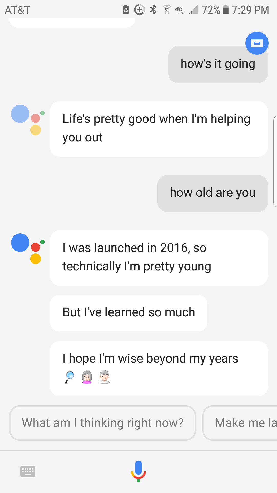
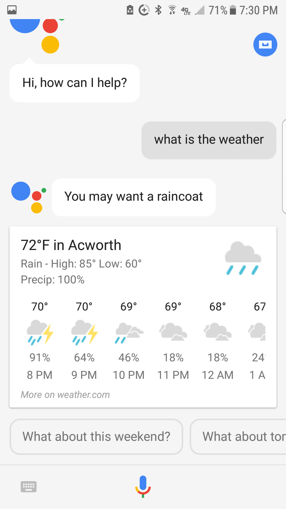
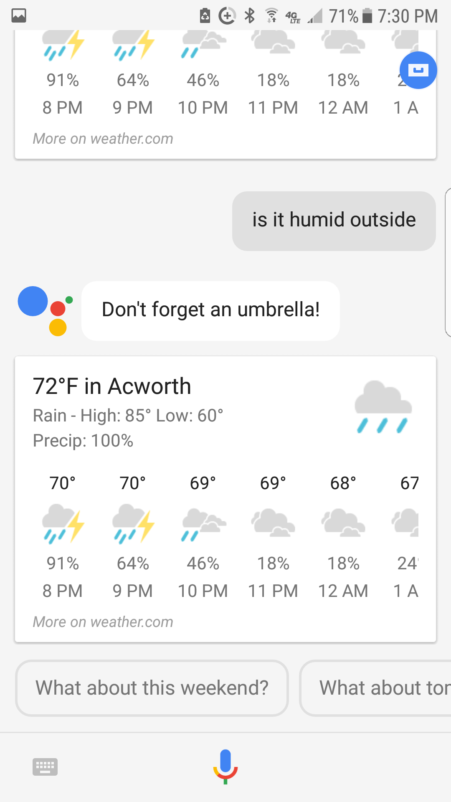
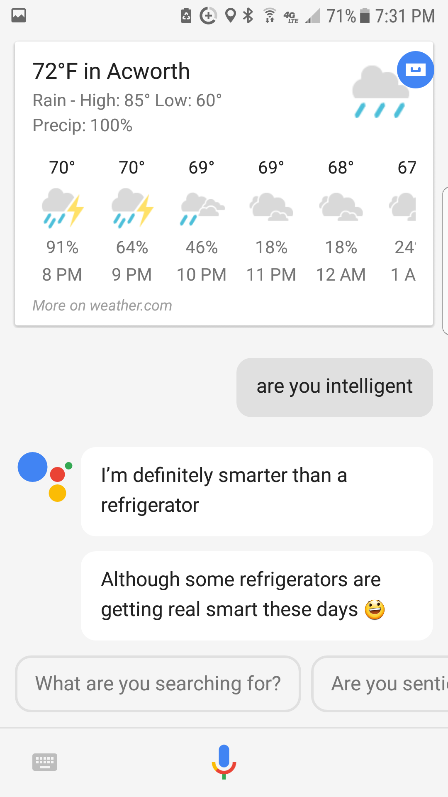
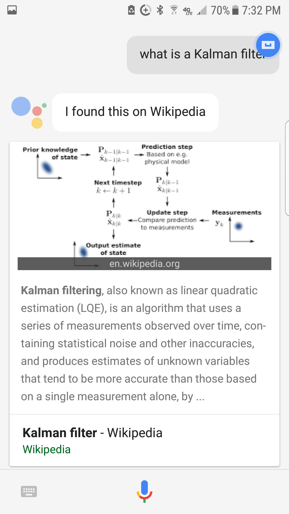
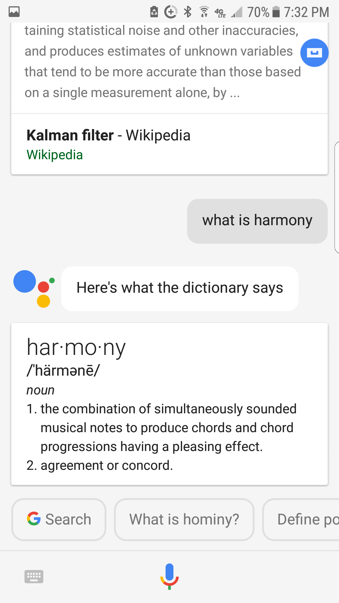
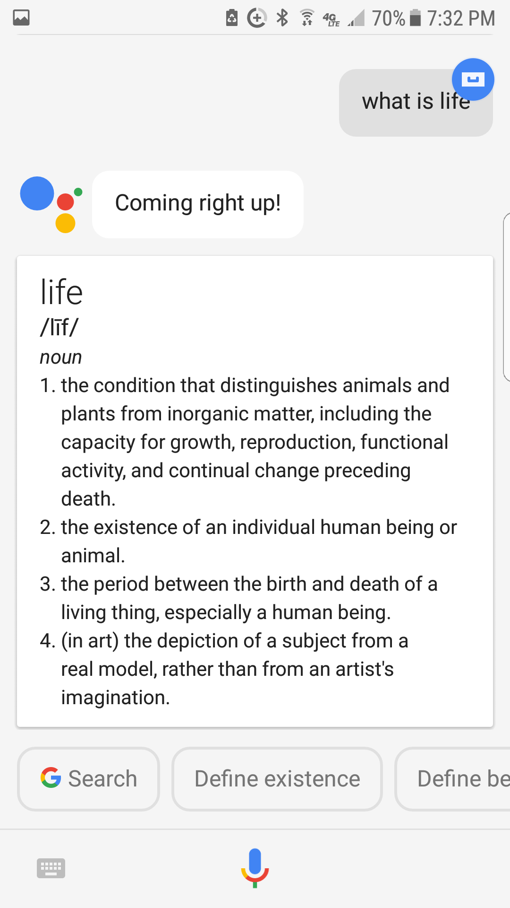
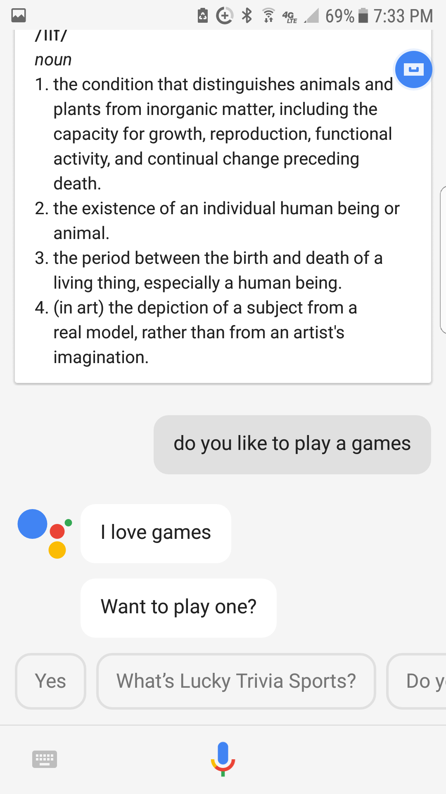

I investigated if Google Assistant was an intelligent. I first asked my Assistant if 10 questions to test its intelligence. Afterwards, I recorded my initial reactions and then re-did the experiment, filming the interaction. I will say, the assistant responed differently to some of the questions the second time around. I will post post my first Q&A for comparison.
When I first asked my Assistant questions I was surprised by the way it answered. I didn't even know that Google could respond to questions without being literal! For example, for the first question, I felt like the response was sweet. Then, for the second question, I was surprised that it didn't say something like, "I am 10 years old," or something like that. I got am explanation about when it was launched and I felt like the answer was funny.
Other things I found interesting about my Google Assistant was that if I asked it something like the weather, it would pull up the forecast, but then include a text message of some sort, like "don't forget an umbrella." I felt like that was clever.
 I think my favorite response was when I asked my Assistant if she was intelligent. I felt like her answer was a bit sassy, but truthful. She knew that she was smarter than a common object, but didn't realize her potential.
    So, after a lot of reading, I've come to the conclusion that Google Assistant is a Model-based reflex agent. I'll explain using the characteristics that make up an intelligent agent: